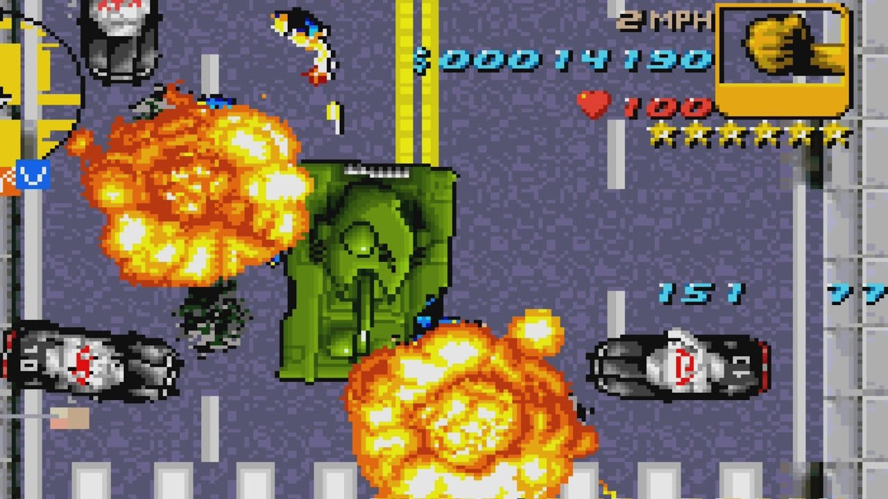
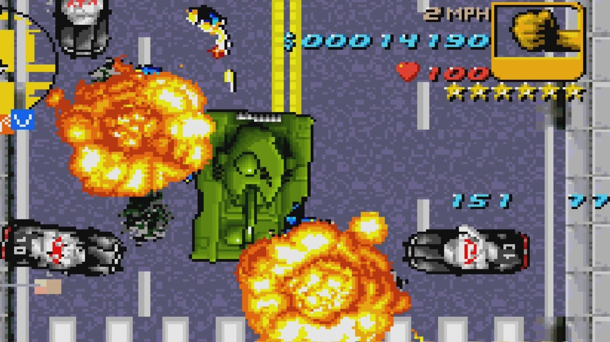

GTA 3
Grand Theft Auto III (abreviado GTA III, también llamado Grand Theft Auto 3 en la App Store) es un videojuego creado por la compañía llamada anteriormente DMA Design ahora llamado Rockstar North, filial de Rockstar Games.
Constituyó la quinta entrega de la saga Grand Theft Auto, y el primer título de esta saga en gráficos 3D y para las plataformas disponibles: PlayStation 2, Xbox y Mac, además de estar disponible para PC. Fue lanzado en octubre del 2001.
La trama empieza con un grupo de tres ladrones atracando una sucursal del Liberty City Bank. Un hombre y una mujer van en cabeza mientras que otro les cubre las espaldas. Sin embargo, al doblar una esquina, el tercer ladrón es disparado por la mujer, quien huye con el otro hombre y el dinero. El traicionado, llamado Claude, ha de hacérselo pagar a los traidores: Catalina (ex-novia de Claude) y Miguel, quienes son cabecillas de un Cartel colombiano afincado en Liberty City.

GTA Vice city
Grand Theft Auto: Vice City es un videojuego creado por Rockstar North/Rockstar Vienna, filiales de la compañía Rockstar Games. Al igual que los otros GTA's, esta entrega sigue el género Sandbox.
Constituye la sexta entrega de la saga GTA y también la segunda para las plataformas PlayStation 2, Xbox y Mac, también para PC.Grand Theft Auto: Vice City ,junto con Grand Theft Auto III habían sido catalogados por la ESRB para la PlayStation 3,cabe decir que este ultimo fue concreto. Esta entrega contiene diversas mejoras respecto a las anteriores, como la posibilidad de cambiar el vestuario del personaje o la de poder adquirir propiedades.
La historia transcurre en 1986 en la ficticia ciudad de Vice City, y es protagonizada por Tommy Vercetti, un hombre ex-convicto tras haber cumplido una condena de 15 años de prisión por haber asesinado a varios hombres en Harwood, Liberty City, bajo ordenes de Sonny Forelli. El juego captura la época por medio de la música, los personajes y los vehículos.

GTA Advance
Grand Theft Auto Advance, también conocido como Grand Theft Auto Game Boy Advance, es un juego creado por Digital Eclipse y distribuido por Rockstar Games.
Es la séptima entrega de la saga Grand Theft Auto, fue lanzado en el año 2004[1] para Game Boy Advance, la portátil de Nintendo, el juego está dotado de unos gráficos y estilo de juego muy parecidos a los de los primeros juegos de la saga GTA, como Grand Theft Auto (vista cenital). Las presentaciones o interludios son las únicas imágenes vistas de frente.
En un principio iba a ser una conversión de GTA III a la portátil de Nintendo,[3] pero después se convirtió en un juego totalmente nuevo, utilizando algunos restos de las versiones de las desarrolladoras anteriores.[4] La aventura transcurre en Liberty City, y es protagonizada por un criminal de bajo nivel; Mike, que acabará mezclándose con personajes tales como: 8-Ball, Asuka y King Courtney.

GTA San Andreas
Grand Theft Auto: San Andreas (abreviado comúnmente como GTA: SA, GTA: San Andreas o simplemente San Andreas) es un videojuego de acción-aventura de mundo abierto desarrollado por Rockstar North y publicado por Rockstar Games. Es el quinto título principal de la serie Grand Theft Auto y el tercero de la misma en poseer gráficos 3D. Bajo la distribución de Take-Two Interactive, San Andreas fue lanzado de forma exclusiva para la plataforma PlayStation 2 en octubre de 2004; en aras del tiempo, el título recibió ediciones para otras plataformas, tanto en dispositivos móviles como en videoconsolas de sexta, séptima y octava generación.
La historia del juego trascurre en el estado ficticio de San Andreas, basado en la zona suroeste estadounidense. Ambientado en 1992, San Andreas cuenta la historia de Carl Johnson, quien decide volver a Los Santos tras cinco años de haberse establecido en Liberty City. Su trama se basa, de modo muy abierto, en sucesos como la rivalidad entre las pandillas Bloods y Crips, la epidemia de crack que hubo en esa época y los disturbios de Los Ángeles de 1992.
Grand Theft Auto: San Andreas recibió la aprobación de la crítica. En el sitio web Metacritic, el juego posee un puntaje promedio de 95 sobre 100 para la plataforma PlayStation 2. Las versiones de Windows y Xbox, por su parte, tienen una puntuación de 93 sobre 100. Asimismo, en dicha web el título se presenta como el quinto juego mejor punteado de PS2.

GTA Liberty city stories
Grand Theft Auto: Liberty City Stories es la novena entrega de la Saga Grand Theft Auto. Se trata del primer juego realizado exclusivamente para PlayStation Portable. Fue lanzado el 24 de octubre de 2005. Las estadísticas dicen que este juego fue el más vendido de dicha consola. Por esta misma razón, fue convertido y lanzado para PlayStation 2. El género principal es el sandbox, al igual que las demás entregas de la saga.
El 17 de diciembre del 2015, Rockstar Games anunció el lanzamiento de Grand Theft Auto: Liberty City Stories para dispositivos móviles, como iOS, Android y dispositivos Amazon.

GTA Vice City stories
Grand Theft Auto: Vice City Stories es el décimo juego de la saga Grand Theft Auto. Es un videojuego de género sandbox diseñado para la consola portátil PlayStation Portable, desarrollado por Rockstar North en colaboración con Rockstar Leeds, y distribuido por Rockstar Games en Norteamérica, Europa y Australia, y por Capcom en Japón. Se trata del último juego lanzado de la tercera generación y del universo 3D en general, así como del primero en cuanto a orden cronológico se refiere.

 
